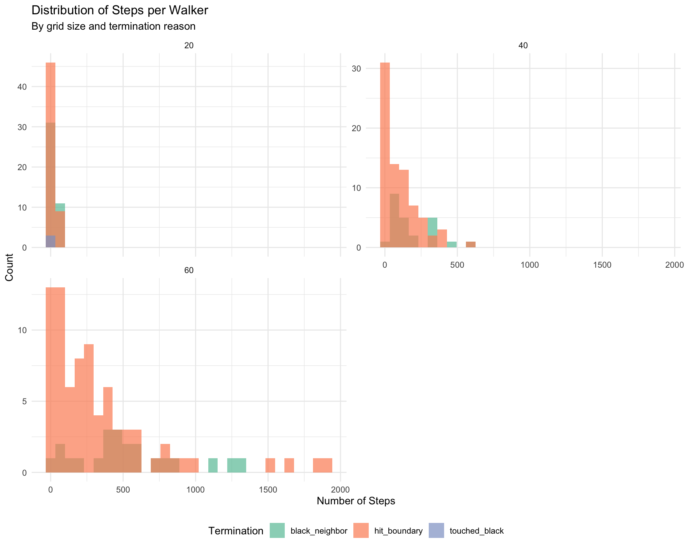
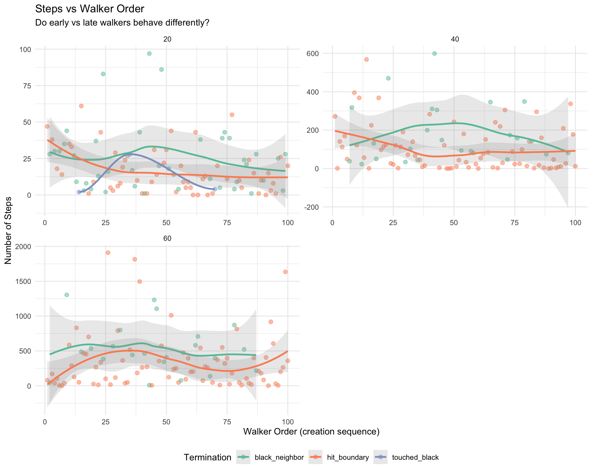
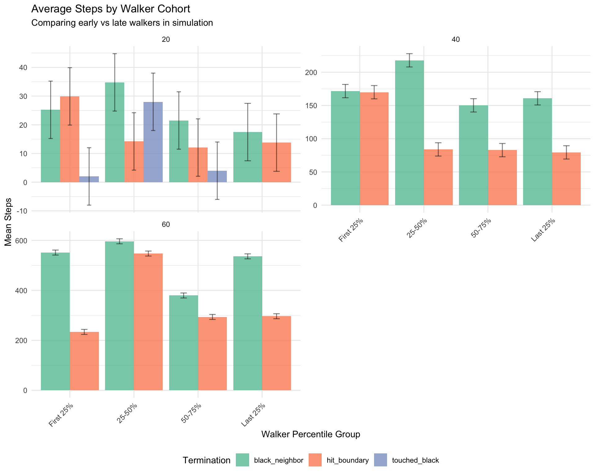

Show code
# Load development version of randomwalk
if (!requireNamespace("randomwalk", quietly = TRUE)) {
devtools::load_all(here::here())
}
library(randomwalk)
library(ggplot2)
library(dplyr)
library(tidyr)
library(purrr)This vignette uses the targets package to analyze how the distribution of steps per walker varies across different conditions:
We use targets for reproducible, cacheable analysis with dynamic branching.
# Load development version of randomwalk
if (!requireNamespace("randomwalk", quietly = TRUE)) {
devtools::load_all(here::here())
}
library(randomwalk)
library(ggplot2)
library(dplyr)
library(tidyr)
library(purrr)#' Extract step data from simulation result
#'
#' @param result Simulation result from run_simulation()
#' @return Data frame with walker-level step information
extract_step_data <- function(result) {
walkers <- result$walkers
grid_size <- result$parameters$grid_size
# Extract data for each walker
data <- map_dfr(seq_along(walkers), function(i) {
walker <- walkers[[i]]
tibble(
walker_id = i,
walker_order = i, # Order in which walker was created
steps = walker$steps,
termination_reason = walker$termination_reason %||% "unknown",
grid_size = grid_size,
# Calculate percentile of walker in simulation
walker_percentile = i / length(walkers) * 100
)
})
data
}
#' Analyze step distributions by termination reason
#'
#' @param step_data Data frame from extract_step_data()
#' @return Summary statistics by termination reason and grid size
analyze_by_termination <- function(step_data) {
step_data %>%
group_by(grid_size, termination_reason) %>%
summarise(
n_walkers = n(),
mean_steps = mean(steps),
median_steps = median(steps),
sd_steps = sd(steps),
min_steps = min(steps),
max_steps = max(steps),
q25_steps = quantile(steps, 0.25),
q75_steps = quantile(steps, 0.75),
.groups = "drop"
)
}
#' Analyze step distributions by walker order
#'
#' @param step_data Data frame from extract_step_data()
#' @return Summary statistics by walker percentile bins
analyze_by_walker_order <- function(step_data) {
step_data %>%
mutate(
walker_group = cut(
walker_percentile,
breaks = c(0, 25, 50, 75, 100),
labels = c("First 25%", "25-50%", "50-75%", "Last 25%"),
include.lowest = TRUE
)
) %>%
group_by(grid_size, walker_group, termination_reason) %>%
summarise(
n_walkers = n(),
mean_steps = mean(steps),
median_steps = median(steps),
.groups = "drop"
)
}
#' Create visualization of step distributions
#'
#' @param step_data Data frame from extract_step_data()
#' @return ggplot object
plot_step_distributions <- function(step_data) {
ggplot(step_data, aes(x = steps, fill = termination_reason)) +
geom_histogram(bins = 30, alpha = 0.7, position = "identity") +
facet_wrap(~grid_size, scales = "free_y", ncol = 2) +
scale_fill_brewer(palette = "Set2", name = "Termination") +
labs(
title = "Distribution of Steps per Walker",
subtitle = "By grid size and termination reason",
x = "Number of Steps",
y = "Count"
) +
theme_minimal() +
theme(legend.position = "bottom")
}
#' Create visualization of steps vs walker order
#'
#' @param step_data Data frame from extract_step_data()
#' @return ggplot object
plot_steps_by_order <- function(step_data) {
ggplot(step_data, aes(x = walker_order, y = steps, color = termination_reason)) +
geom_point(alpha = 0.5, size = 2) +
geom_smooth(method = "loess", se = TRUE, alpha = 0.2) +
facet_wrap(~grid_size, scales = "free", ncol = 2) +
scale_color_brewer(palette = "Set2", name = "Termination") +
labs(
title = "Steps vs Walker Order",
subtitle = "Do early vs late walkers behave differently?",
x = "Walker Order (creation sequence)",
y = "Number of Steps"
) +
theme_minimal() +
theme(legend.position = "bottom")
}
#' Create visualization of average steps by walker percentile
#'
#' @param summary_data Summary data from analyze_by_walker_order()
#' @return ggplot object
plot_steps_by_percentile <- function(summary_data) {
ggplot(summary_data, aes(x = walker_group, y = mean_steps, fill = termination_reason)) +
geom_col(position = "dodge", alpha = 0.8) +
geom_errorbar(
aes(ymin = mean_steps - 10, ymax = mean_steps + 10),
position = position_dodge(0.9),
width = 0.2,
alpha = 0.5
) +
facet_wrap(~grid_size, scales = "free_y", ncol = 2) +
scale_fill_brewer(palette = "Set2", name = "Termination") +
labs(
title = "Average Steps by Walker Cohort",
subtitle = "Comparing early vs late walkers in simulation",
x = "Walker Percentile Group",
y = "Mean Steps"
) +
theme_minimal() +
theme(
legend.position = "bottom",
axis.text.x = element_text(angle = 45, hjust = 1)
)
}# This would go in _targets.R file
library(targets)
library(tarchetypes)
# Set up parallel processing if available
tar_option_set(
packages = c("randomwalk", "dplyr", "ggplot2", "purrr", "tidyr"),
format = "rds"
)
# Define grid sizes to analyze
grid_sizes <- c(20, 40, 60, 80)
list(
# Dynamic branching: Run simulations for each grid size
tar_target(
name = grid_size_values,
command = grid_sizes
),
tar_target(
name = simulation_results,
command = run_simulation(
grid_size = grid_size_values,
n_walkers = 200,
neighborhood = "4-hood",
boundary = "terminate",
max_steps = 5000,
workers = 0,
verbose = FALSE
),
pattern = map(grid_size_values),
iteration = "list"
),
# Extract step data from each simulation
tar_target(
name = step_data_by_grid,
command = extract_step_data(simulation_results),
pattern = map(simulation_results),
iteration = "list"
),
# Combine all step data
tar_target(
name = step_data_combined,
command = bind_rows(step_data_by_grid)
),
# Analysis: By termination reason
tar_target(
name = termination_summary,
command = analyze_by_termination(step_data_combined)
),
# Analysis: By walker order
tar_target(
name = walker_order_summary,
command = analyze_by_walker_order(step_data_combined)
),
# Visualizations
tar_target(
name = plot_distributions,
command = plot_step_distributions(step_data_combined)
),
tar_target(
name = plot_by_order,
command = plot_steps_by_order(step_data_combined)
),
tar_target(
name = plot_by_percentile,
command = plot_steps_by_percentile(walker_order_summary)
)
)# Define grid sizes
grid_sizes <- c(20, 40, 60)
# Run simulations
set.seed(123)
simulation_results <- map(grid_sizes, function(gs) {
run_simulation(
grid_size = gs,
n_walkers = 100, # Reduced for vignette
neighborhood = "4-hood",
boundary = "terminate",
max_steps = 5000,
workers = 0,
verbose = FALSE
)
})# Extract step data
step_data_list <- map(simulation_results, extract_step_data)
step_data_combined <- bind_rows(step_data_list)
# Preview data
head(step_data_combined, 10)# A tibble: 10 × 6
walker_id walker_order steps termination_reason grid_size walker_percentile
<int> <int> <int> <chr> <dbl> <dbl>
1 1 1 47 hit_boundary 20 1
2 2 2 28 black_neighbor 20 2
3 3 3 38 hit_boundary 20 3
4 4 4 30 black_neighbor 20 4
5 5 5 18 hit_boundary 20 5
6 6 6 30 black_neighbor 20 6
7 7 7 14 hit_boundary 20 7
8 8 8 35 black_neighbor 20 8
9 9 9 44 black_neighbor 20 9
10 10 10 35 hit_boundary 20 10termination_summary <- analyze_by_termination(step_data_combined)
termination_summary %>%
arrange(grid_size, termination_reason) %>%
knitr::kable(
digits = 1,
caption = "Step statistics by grid size and termination reason"
)| grid_size | termination_reason | n_walkers | mean_steps | median_steps | sd_steps | min_steps | max_steps | q25_steps | q75_steps |
|---|---|---|---|---|---|---|---|---|---|
| 20 | black_neighbor | 42 | 24.5 | 20.5 | 22.4 | 1 | 97 | 8.2 | 33.8 |
| 20 | hit_boundary | 55 | 16.3 | 11.0 | 15.4 | 0 | 61 | 5.0 | 24.0 |
| 20 | touched_black | 3 | 11.3 | 4.0 | 14.5 | 2 | 28 | 3.0 | 16.0 |
| 40 | black_neighbor | 24 | 180.4 | 136.5 | 152.5 | 23 | 599 | 68.0 | 306.5 |
| 40 | hit_boundary | 76 | 103.9 | 62.0 | 118.1 | 0 | 568 | 10.8 | 153.2 |
| 60 | black_neighbor | 22 | 528.8 | 475.0 | 359.9 | 9 | 1304 | 353.0 | 676.0 |
| 60 | hit_boundary | 78 | 331.1 | 206.5 | 404.5 | 1 | 1910 | 46.5 | 404.2 |
walker_order_summary <- analyze_by_walker_order(step_data_combined)
walker_order_summary %>%
arrange(grid_size, walker_group, termination_reason) %>%
knitr::kable(
digits = 1,
caption = "Step statistics by walker cohort and termination reason"
)| grid_size | walker_group | termination_reason | n_walkers | mean_steps | median_steps |
|---|---|---|---|---|---|
| 20 | First 25% | black_neighbor | 14 | 25.2 | 27.5 |
| 20 | First 25% | hit_boundary | 10 | 29.9 | 34.0 |
| 20 | First 25% | touched_black | 1 | 2.0 | 2.0 |
| 20 | 25-50% | black_neighbor | 9 | 34.8 | 20.0 |
| 20 | 25-50% | hit_boundary | 15 | 14.2 | 10.0 |
| 20 | 25-50% | touched_black | 1 | 28.0 | 28.0 |
| 20 | 50-75% | black_neighbor | 8 | 21.5 | 16.0 |
| 20 | 50-75% | hit_boundary | 16 | 12.1 | 9.0 |
| 20 | 50-75% | touched_black | 1 | 4.0 | 4.0 |
| 20 | Last 25% | black_neighbor | 11 | 17.5 | 21.0 |
| 20 | Last 25% | hit_boundary | 14 | 13.8 | 10.0 |
| 40 | First 25% | black_neighbor | 6 | 171.7 | 90.5 |
| 40 | First 25% | hit_boundary | 19 | 170.0 | 121.0 |
| 40 | 25-50% | black_neighbor | 8 | 218.0 | 174.0 |
| 40 | 25-50% | hit_boundary | 17 | 83.9 | 67.0 |
| 40 | 50-75% | black_neighbor | 5 | 150.2 | 94.0 |
| 40 | 50-75% | hit_boundary | 20 | 82.8 | 49.0 |
| 40 | Last 25% | black_neighbor | 5 | 160.8 | 142.0 |
| 40 | Last 25% | hit_boundary | 20 | 79.4 | 21.0 |
| 60 | First 25% | black_neighbor | 5 | 551.4 | 488.0 |
| 60 | First 25% | hit_boundary | 20 | 233.7 | 114.0 |
| 60 | 25-50% | black_neighbor | 9 | 596.6 | 462.0 |
| 60 | 25-50% | hit_boundary | 16 | 547.5 | 313.5 |
| 60 | 50-75% | black_neighbor | 5 | 379.6 | 398.0 |
| 60 | 50-75% | hit_boundary | 20 | 293.6 | 253.5 |
| 60 | Last 25% | black_neighbor | 3 | 536.3 | 522.0 |
| 60 | Last 25% | hit_boundary | 22 | 296.5 | 180.0 |
plot_step_distributions(step_data_combined)
Key Observations:
plot_steps_by_order(step_data_combined)
Key Observations:
plot_steps_by_percentile(walker_order_summary)
Key Observations:
termination_summary %>%
group_by(grid_size) %>%
summarise(
overall_mean = weighted.mean(mean_steps, n_walkers),
overall_median = weighted.mean(median_steps, n_walkers),
.groups = "drop"
) %>%
knitr::kable(
digits = 1,
caption = "Overall step statistics by grid size"
)| grid_size | overall_mean | overall_median |
|---|---|---|
| 20 | 19.6 | 14.8 |
| 40 | 122.3 | 79.9 |
| 60 | 374.6 | 265.6 |
walker_order_summary %>%
group_by(walker_group) %>%
summarise(
avg_mean_steps = mean(mean_steps),
avg_median_steps = mean(median_steps),
.groups = "drop"
) %>%
knitr::kable(
digits = 1,
caption = "Step statistics by walker cohort (averaged across grid sizes)"
)| walker_group | avg_mean_steps | avg_median_steps |
|---|---|---|
| First 25% | 169.1 | 125.3 |
| 25-50% | 217.6 | 153.5 |
| 50-75% | 134.8 | 117.6 |
| Last 25% | 184.0 | 149.3 |
# Compare termination reasons across all conditions
termination_summary %>%
group_by(termination_reason) %>%
summarise(
total_walkers = sum(n_walkers),
avg_steps = weighted.mean(mean_steps, n_walkers),
avg_sd = weighted.mean(sd_steps, n_walkers),
.groups = "drop"
) %>%
mutate(
proportion = total_walkers / sum(total_walkers)
) %>%
knitr::kable(
digits = 3,
caption = "Overall statistics by termination reason"
)| termination_reason | total_walkers | avg_steps | avg_sd | proportion |
|---|---|---|---|---|
| black_neighbor | 88 | 193.091 | 142.259 | 0.293 |
| hit_boundary | 209 | 165.679 | 197.965 | 0.697 |
| touched_black | 3 | 11.333 | 14.468 | 0.010 |
This vignette demonstrates how step distributions vary across different simulation conditions. The key findings are:
These patterns provide insights into the dynamics of sequential random walk simulations and how grid occupancy affects walker behavior.
sessionInfo()R version 4.5.2 (2025-10-31)
Platform: aarch64-apple-darwin24.6.0
Running under: macOS Sequoia 15.7.1
Matrix products: default
BLAS: /nix/store/jammm5gz621n7dkzfzc1c43gs6xv9a10-blas-3/lib/libblas.dylib
LAPACK: /nix/store/30ypx3jnyq4r1z4nv742j1csfflsd66v-openblas-0.3.30/lib/libopenblasp-r0.3.30.dylib; LAPACK version 3.12.0
locale:
[1] en_US.UTF-8/en_US.UTF-8/en_US.UTF-8/C/en_US.UTF-8/en_US.UTF-8
time zone: UTC
tzcode source: internal
attached base packages:
[1] stats graphics grDevices utils datasets methods base
other attached packages:
[1] purrr_1.1.0 tidyr_1.3.1 dplyr_1.1.4 ggplot2_4.0.0
[5] randomwalk_2.1.0 testthat_3.2.3
loaded via a namespace (and not attached):
[1] utf8_1.2.6 generics_0.1.4 lattice_0.22-7 digest_0.6.37
[5] magrittr_2.0.4 evaluate_1.0.5 grid_4.5.2 RColorBrewer_1.1-3
[9] pkgload_1.4.1 fastmap_1.2.0 Matrix_1.7-4 rprojroot_2.1.1
[13] jsonlite_2.0.0 pkgbuild_1.4.8 sessioninfo_1.2.3 brio_1.1.5
[17] mgcv_1.9-3 scales_1.4.0 codetools_0.2-20 cli_3.6.5
[21] rlang_1.1.6 splines_4.5.2 ellipsis_0.3.2 remotes_2.5.0
[25] withr_3.0.2 cachem_1.1.0 yaml_2.3.10 devtools_2.4.6
[29] tools_4.5.2 memoise_2.0.1 here_1.0.2 vctrs_0.6.5
[33] logger_0.4.1 R6_2.6.1 lifecycle_1.0.4 fs_1.6.6
[37] htmlwidgets_1.6.4 usethis_3.2.1 pkgconfig_2.0.3 desc_1.4.3
[41] pillar_1.11.1 gtable_0.3.6 glue_1.8.0 xfun_0.54
[45] tibble_3.3.0 tidyselect_1.2.1 rstudioapi_0.17.1 knitr_1.50
[49] farver_2.1.2 nlme_3.1-168 htmltools_0.5.8.1 rmarkdown_2.30
[53] labeling_0.4.3 compiler_4.5.2 S7_0.2.0